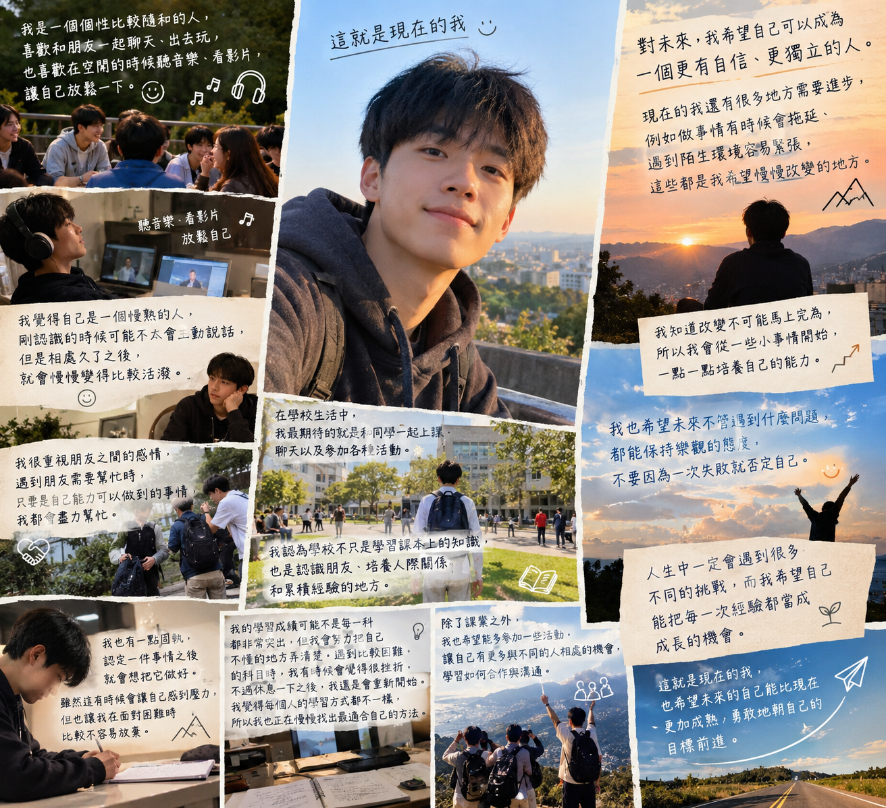

大家好，我是一個性比較隨和的人，平常喜歡和朋友一起聊天、出去玩，也喜歡在空閒的時候聽音樂、看影片，讓自己放鬆一下。我覺得自己是一個慢熟的人，剛認識的時候可能不太會主動說話，但是相處久了之後，就會慢慢變得比較活潑。我很重視朋友之間的感情，遇到朋友需要幫忙時，只要是自己能力可以做到的事情，我都會盡力幫忙。我也覺得自己有一點固執，認定一件事情之後就會想把它做
在學校生活中，我最期待的就是和同學一起上課、聊天以及參加各種活動。我認為學校不只是學習課本上的知識，也是認識朋友、培養人際關係和累積經驗的地方。我的學習成績可能不是每一科都非常突出，但是我會努力把自己不懂的地方弄清楚。遇到比較困難的科目時，我有時候會覺得很挫折，不過休息一下之後，我還是會重新開始。我覺得每個人的學習方式都不一樣，所以我也正在慢慢找出最適合自己的方法。除了課業之外，我也希望能多參加一些活動，讓自己有更多與不同的人相處的機會，學習如何合作與溝通。
對未來，我希望自己可以成為一個更有自信、更獨立的人。現在的我還有很多地方需要進步，例如做事情有時候會拖延、遇到陌生環境容易緊張，這些都是我希望慢慢改變的地方。我知道改變不可能馬上完成，所以我會從一些小事情開始，一點一點培養自己的能力。我也希望未來不管遇到什麼問題，都能保持樂觀的態度，不要因為一次失敗就否定自己。人生中一定會遇到很多不同的挑戰，而我希望自己能把每一次經驗都當成成長的機會。這就是現在的我，也希望未來的自己能比現在更加成熟，勇敢地朝自己的目標前進。
